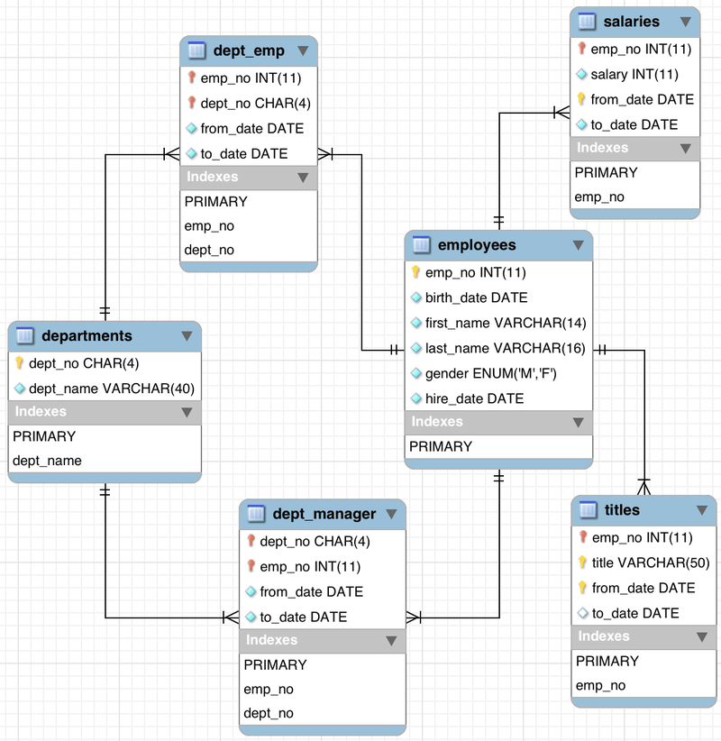

存储过程是存储在数据库中并且已经提前编译好的 SQL 语句集合，它是应用中数据操作的部分逻辑实现。MySQL 5 版本引入了这一设计，存储过程包含 3 个部分：
- 名称；
- 参数列表；
- SQL 语句；
特性
存储过程包含了诸多特性，主要包括：
- 性能提升：存储过程是预先编译好、存储好的 SQL 语句集合，没有 SQL 词法/语法解析、编译的过程；
- 减少网络流量：客户端无须发送大量 SQL 语句到数据库，只需要提供存储过程名称和参数列表即可；
- 可重用：存储过程的逻辑一般都是常规周期性的逻辑操作，可重复使用；
- 安全性强：网络上传输的数据不包含具体的操作信息，可以为存储过程设置用户操作权限；
基本语法
在 MySQL 中，创建一个存储过程的语法如下：
DELIMITER &&
CREATE PROCEDURE procedure_name [[IN | OUT | INOUT] parameter_name datatype [, parameter datatype]) ]
BEGIN
-- 定义变量 ...
-- 执行逻辑 ...
END &&
DELIMITER ;
创建存储过程时，可以使用 DELIMITER 指定分隔符，这样就可以在存储过程依然使用冒号 ; 作为语句的分隔符。
IN | OUT | INOUT 为参数的类型，分别表示：
IN：参数只作为输入，存储过程内部不允许对其进行修改；OUT：参数只作为输出，存储过程内部可以对其修改，但没办法访问其初始值；INOUT：同时兼具IN和OUT类型参数的特性；
在终端执行存储过程的命令如下：
CALL procedure_name (参数列表);
- 使用 CALL 关键字执行存储过程；
- 如果有参数，需要在括号内指定，使用逗号分隔；
与 PostgreSQL 不同，MySQL 不支持下面语法：
CREATE OR REPLACE procedureName;
要想实现相同的效果，需编写如下语句：
DROP PROCEDURE IF EXISTS procedureName;
...
CREATE PROCEDURE procedure_name ...
...
条件判断：
DROP PROCEDURE IF EXISTS judge_num;
DELIMITER &&
CREATE PROCEDURE judge_num (in num int)
BEGIN
if num > 10 then
SELECT 'X > 10' AS result;
elseif num < 0 then
SELECT 'X < 0' AS result;
else
SELECT '0 <= X <= 10' AS result;
end if;
END &&
DELIMITER ;
CALL judge_num(20);
示例
示例使用的数据来自 MySQL 的官方测试数据集，可直接通过 datacharmer/test_db 下载脚本和数据，数据库结构如下图：

不带参数
DROP PROCEDURE IF EXISTS get_emps;
DELIMITER &&
CREATE PROCEDURE get_emps ()
BEGIN
SELECT emp_no FROM dept_emp WHERE from_date > '1990-01-01';
END &&
DELIMITER ;
CALL get_emps;
- 即使存储过程未使用参数，仍然需要使用括号
()； - 在执行时，不需要括号
()；
带 IN 类型参数
DELIMITER &&
CREATE PROCEDURE total_salary (in empno varchar(5))
BEGIN
SELECT sum(salary) FROM salaries WHERE emp_no=empno;
END &&
DELIMITER ;
CALL total_salary('10001');
IN类型参数可以直接传入，可以不需要提前声明变量；
带 OUT 类型参数
显然，上一个例子更适合结合 OUT 类型参数。
DROP PROCEDURE IF EXISTS out_total_salary;
DELIMITER &&
CREATE PROCEDURE out_total_salary (in empno varchar(5), out total int)
BEGIN
SELECT sum(salary) INTO total FROM salaries WHERE emp_no=empno;
END &&
DELIMITER ;
SET @total = 0;
CALL out_total_salary('10001', @total);
SELECT @total;
SET指定的变量是弱类型变量，可以任意赋值；
最佳实践
在 stackoverfolow 找到一个关于编写存储过程的最佳实践，其中要点未做尝试，留个记录便于反复查看。
- 调用存储过程时，使用全路径，减少查找存储过程的逻辑判断；
CALL employees.out_total_salary('10001', @total);
- 做好存储过程的权限管理；
- 使用变量记录存储过程中的关键信息，如错误信息 @@error、行数信息 @@rowcount 等；
- 使用一个
OUT类型变量，用于标识存储过程是否执行成功，可以使用int类型参数，0 表示成功，非 0 表示失败；
其它
SHOW CREATE PROCEDURE
可以使用 SHOW CREATE PROCEDURE 显示存储过程的基本信息：
mysql> SHOW CREATE PROCEDURE dept_emp_num\G;
*************************** 1. row ***************************
Procedure: dept_emp_num
sql_mode: STRICT_TRANS_TABLES,NO_ENGINE_SUBSTITUTION
Create Procedure: CREATE DEFINER=`root`@`localhost` PROCEDURE `dept_emp_num`(in deptno varchar(100), out num int)
BEGIN
SELECT count(emp_no) INTO num FROM dept_emp WHERE dept_no=deptno;
END
character_set_client: utf8mb4
collation_connection: utf8mb4_0900_ai_ci
Database Collation: utf8mb4_0900_ai_ci
1 row in set (0.00 sec)
information_schema.routines 表
information_schema.routines 表中存放了存储过程信息，如：
mysql> SELECT routine_name, created, sql_mode, sql_data_access FROM information_schema.routines WHERE routine_type='PROCEDURE' AND routine_name='total_salary'\G;
*************************** 1. row ***************************
ROUTINE_NAME: total_salary
CREATED: 2022-04-20 09:49:57
SQL_MODE: STRICT_TRANS_TABLES,NO_ENGINE_SUBSTITUTION
SQL_DATA_ACCESS: CONTAINS SQL
1 row in set (0.46 sec)
评论